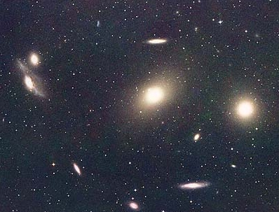

Credit: David Malin, © Anglo-Australian Obs./Royal Obs. Edinburgh
When viewed edge-on, S0 galaxies (alternatively called lenticular galaxies) have a shape reminiscent of a lens (hence the alternative name). Located at the fork in the Hubble classification diagram and labelled S0 or SB0 (if there is a hint of a bar), they have a structure that appears intermediate between elliptical galaxies and spiral galaxies.
They clearly exhibit a bulge and disk similar to spiral galaxies, but do not show any signs of spiral arms or significant quantities of interstellar material. They consist primarily of old, population II stars and for this reason, are often misclassified as elliptical galaxies when viewed face-on.
The origins of S0 galaxies are still unknown, but one idea is that they were originally spiral galaxies which either lost or used up their interstellar medium through interactions with another galaxy.